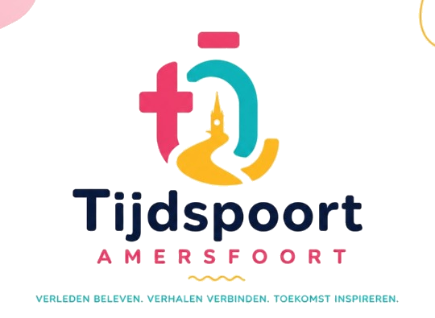

Havik 47
Ontvangst, introductie en de eerste stap door de tijd.

Historisch Amersfoort opnieuw beleven
Stichting Tijdspoort brengt het erfgoed van Amersfoort tot leven met historische verhalen, virtual reality en een interactieve route door de binnenstad.
Over Stichting Tijdspoort
Stichting Tijdspoort zet zich in voor het onderzoeken, behouden, documenteren en toegankelijk maken van cultureel erfgoed. We combineren historische kennis met digitale technieken om nieuwe generaties op een persoonlijke en betekenisvolle manier met het verleden te verbinden.
Onze eerste beleving richt zich op Amersfoort in 1787. Bezoekers starten aan het Havik en trekken vervolgens langs markante plekken in de historische binnenstad.
De inspiratie voor Stichting Tijdspoort vindt haar oorsprong in Havik 47, waar de familie Van Ramselaar al meer dan 75 jaar antiek en erfgoed bewaart. Waar eerdere generaties voorwerpen en verhalen bewaarden, brengen wij met nieuwe technologie de geschiedenis van Amersfoort opnieuw tot leven.
"Ik ben trots op onze familie en hoe we generaties erfgoed en antiek hebben bewaard, en dit nu levendig kunnen doorgeven aan iedereen." — Henk van Ramselaar
De eerste ervaring
Verhalen, locaties en virtual reality vormen samen één doorlopende ervaring. Zelfstandig te doorlopen, of begeleid voor schoolklassen en groepen.
Ontvangst, introductie en de eerste stap door de tijd.
Ontdek het dagelijks leven rond de Sint-Joriskerk.
Beleef de dramatische explosie van 1787 van dichtbij.
Sluit de route af bij een van de iconen van de stad.
Historie en innovatie
We werken samen met historici, culturele organisaties, makers en technologische partners. Zo zorgen we dat de ervaring niet alleen indrukwekkend is, maar ook zorgvuldig, toegankelijk en historisch verantwoord.
Het belevingsconcept '1787' brengt de belegering van Amersfoort en de spanningen tussen patriotten en orangisten tot leven, en laat zien hoe dit doorwerkte in het dagelijks leven van de inwoners. Studio Enversed werkt als artistiek producent aan de VR-belevingsroute; historisch adviseurs Gerard Raven en David de Vries bewaken de historische juistheid van het verhaal.
Organisatie
Stichting Tijdspoort werkt volgens de Governance Code Cultuur, met een duidelijke scheiding tussen bestuur en uitvoering.
Initiatiefnemer van het project en nazaat van de familie Van Ramselaar. Stuurt de dagelijkse uitvoering, partners en leveranciers aan en bewaakt kwaliteit, planning en budget.
Kleindochter van de oprichter van Havik 47. Ondersteunt de operationele uitvoering en bouwt de vrijwilligersorganisatie op voor na de opening van de route.
Pam Groenestein — voorzitter
Isabel van der Leij — penningmeester
Mourad El Amry — secretaris
We komen graag in contact met erfgoedinstellingen, fondsen, scholen, bedrijven en andere betrokken partners.
Beleidsdocumenten, jaarverslagen en bestuursinformatie worden hier later beschikbaar gemaakt.
Contact en samenwerking
Heb je ideeën, historische kennis of interesse in een samenwerking? Neem dan contact met ons op.